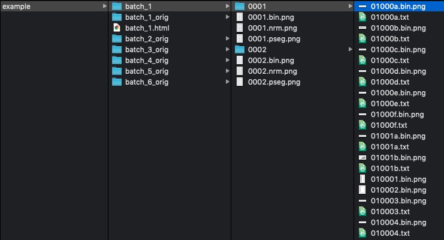
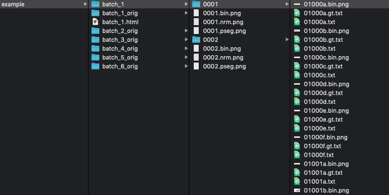

Chapter 5 Ground Truth creation
The main challenge in creating Ground Truth is that we need a comfortable environment for doing the proofreading, with safety that we know the software used will save the edited file back without any structural changes.
Lots of programmers have got the idea to build their own proofreading environment. In practice this is very complicated. Tools that allow editing beyond individual lines usually break something in the XML structure.
In principle proofreading tools / environment can be extremely simple, and this is illustrated by Ocropy in the next section.
5.1 Examples
We have training data in folders data/batch_1_orig, data/batch_2_orig, data/batch_3_orig, data/batch_4_orig, data/batch_5_orig and data/batch_6_orig. Each batch has 2 pages.
We are using Ocropy in this section, so please install Ocropy.
This is the starting position:
Just scanned images
ocropus-nlbin ./example/batch_1_orig/*.png -o ./example/batch_1Binarized pages
This tool can be used to create segmented lines. The system stores somehow information about the line locations, but moving the files around is apparently not a good idea.
ocropus-gpageseg ./example/batch_1/*.bin.pngSegmented lines
Now, let’s pretend we are without any OCR system for this script. Then we would need to add start writing from the scratch. This could be started with the following command:
ocropus-gtedit html ./example/batch_1/*/*.png -o ./example/batch_1.htmlThis outputs an HTML file:
HTML file appears
Empty HTML from Ocropy (has to be edited in Firefox)
However, as we have a model from an earlier work, let’s use it for now.
ocropus-rpred -Q 4 -m ../unified-northern-alphabet-ocr/models/ocropy/mixed_model.pyrnn.gz ./example/batch_1/*/*.bin.pngAs we already see from output, the result is sensible:
INFO: ./example/batch_1/0001/010003.bin.png:Mikol skolat humus ols.
INFO: ./example/batch_1/0001/010007.bin.png:lavs:
INFO: ./example/batch_1/0001/010004.bin.png:Skolat ņavram sav oli. Ta savit ņavram,
INFO: ./example/batch_1/0001/010008.bin.png:- Ja! tьꜧ-unten
INFO: ./example/batch_1/0001/010006.bin.png:varuŋkve eri, at vaꜧte. Uļakꞩi, tau nupьl
INFO: ./example/batch_1/0001/010009.bin.png:tuŋkve patev.
INFO: ./example/batch_1/0001/010005.bin.png:Mikol at sunsьꜧlas. Mikol nas ļuli, manьr
INFO: ./example/batch_1/0001/01000b.bin.png:Sistamьꜧ olen.
INFO: ./example/batch_1/0001/01000a.bin.png:Mikol, haniꞩtah-
INFO: ./example/batch_1/0001/01000f.bin.png:- Ꞩemen luvtuŋkve eri.
INFO: ./example/batch_1/0001/01000e.bin.png:Haniꞩtan hum lavs:
INFO: ./example/batch_1/0001/01000c.bin.png:Ꞩemen skolan johtьs. Skolat ņavramьt
INFO: ./example/batch_1/0001/010011.bin.png:hurataves. Puŋkane luvtuŋkve haņꞩulaves.
INFO: ./example/batch_1/0001/01000d.bin.png:sistamьꜧ oleꜧt. Ꞩemen paŋkьŋьꜧ johtьs.These lines are saved with the images.

If we edit the HTML, and the save the file, the edited lines can be saved. This happens with:
ocropus-gtedit extract -O ./example/batch_1.htmlThis saves the edited lines with extension .gt.txt.

In this point we can do:
cat example/batch_1/**/*gt.txt | wc -l
> 48More than enough! Let’s go onward!
5.2 Summary
.txtfiles are collected to the HTML- Proofread lines are exported from HTML
- The wanted outcome is pairs of
.bin.pngand.gt.txtfiles - These can be used when training the models
The idea is that you go now to section @ref(training} about model training, train the first model with what we have, and then the workflow described here is applied to batch_2.